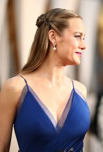
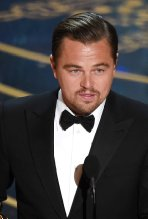
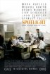
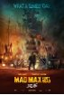
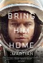
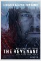

Brie Larson, Leonardo DiCaprio, and Spotlight took home the top prizes at the Academy Awards Sunday evening. Mad Max: Fury Road was the night's big winner with six total nods. Check out Awards Central for photos from the red carpet, photos from the show, press room, and parties, plus the full list of winners.
|  |  | ||
| Red Carpet Photos | Show Photos | Press Room Photos | Party Photos |
Best Motion Picture of the Year |
|||
|---|---|---|---|
|  |
Spotlight Michael Sugar, Steve Golin, Nicole Rocklin, Blye Pagon Faust |
 |
Mad Max: Fury Road Doug Mitchell, George Miller |
|
The Big Short Brad Pitt, Dede Gardner, Jeremy Kleiner |
 |
The Martian Simon Kinberg, Ridley Scott, Michael Schaefer, Mark Huffam |
|
|
Brooklyn Finola Dwyer, Amanda Posey |
 |
The Revenant Arnon Milchan, Steve Golin, Alejandro Gonzalez Inarritu, Mary Parent, Keith Redmon |
|
|
Bridge of Spies Steven Spielberg, Marc Platt, Kristie Macosko Krieger |
Room Ed Guiney |